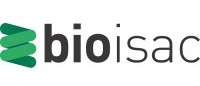

Home
Call for Papers
Program
Organization
Submit Paper
Organization
Workshop Organizers
General Chair
Whitney Bowman-Zatzkin, BIO-ISAC, USA
Program Committee Chairs
Prof. Rami Puzis, Ben-Gurion University of the Negev, Israel
Dr. Jacob Beal, RTX BBN Technologies, USA
Publicity and External Relations Chairs
Prof. David Molik, Kansas State University, USA
Tessa Alexanian, International Biosecurity and Biosafety Initiative for Science (IBBIS)
Rassin Lababidi, International Biosecurity and Biosafety Initiative for Science (IBBIS)
Contact us at
cyberbio26@ieee-security.org
Program Committee
To be announced.
Affiliated Organizations
